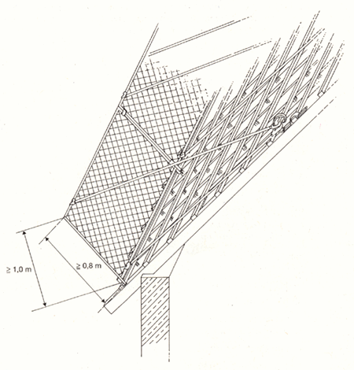

9 |
Anforderungen an Dachschutzwände auf geneigten Flächen |
| 9.1 | Allgemeines |
| 9.1.1 | Dachschutzwände müssen eine Bauhöhe von mindestens 1,00 m haben. |
| 9.1.2 | Die Oberkante der Dachschutzwand muss sich mindestens 0,80 m über der geneigten Fläche, rechtwinklig zu dieser gemessen, befinden (siehe Bild 6). |
| 9.1.3 | Der Winkel zwischen Dachschutzwand und geneigter Fläche darf höchstens 90° betragen. |
| 9.2 | Konstruktive Anforderungen |
| 9.2.1 | Schutznetze nach DIN EN 1263-1 und Drahtgeflechte nach DIN 4420-1 müssen allseitig Masche für Masche an Stahlrohren mit mindestens 3,2 mm Wanddicke oder Aluminiumrohren mit mindestens 4,0 mm Wanddicke und 48,3 mm Außendurchmesser befestigt werden. Der Netzstoß muss Masche für Masche mit einem Kopplungsseil nach DIN EN 1263-1 verbunden werden. Schutznetze dürfen nur vom Hersteller in ihren Abmessungen verändert werden. |
| 9.2.2 | Abweichend von Abschnitt 9.2.1 darf auf die Befestigung Masche für Masche verzichtet werden, wenn das Netz in Abständen £ 75 cm am Rand befestigt ist und die ausreichende Tragfähigkeit der Netzbefestigung im dynamischen Versuch nach DIN EN 1263-1, Abs. 7.11, nachgewiesen ist. |

| Bild 6: | Dachschutzwand auf geneigter Dachfläche |
| 9.2.3 | Schutznetze dürfen ohne Prüfung der Prüfmasche nur innerhalb von 12 Monaten nach Herstellung verwendet werden. Sollen ältere Schutznetze eingesetzt werden, ist nachzuweisen, dass das Mindestenergie-aufnahmevermögen der Prüfmasche den vom Hersteller angegebenen Wert nicht unterschreitet. Für diesen Nachweis ist eine Prüfmasche aus dem Schutznetz zu entnehmen und an eine zugelassene Stelle nach DIN EN 45001 oder den Hersteller zu geben. Die Prüfung des Mindestenergieaufnahmevermögens der Prüfmasche hat nach DIN EN 1263-1 zu erfolgen und darf nicht länger als 12 Monate zurückliegen. |
Schutznetze haben vom Hersteller eingearbeitete Prüfmaschen, um die Festigkeitsminderung der Netzgarne infolge Alterung feststellen zu können.
Ein Prüfseil kann ein Stück Maschenseil oder eine Masche sein.
Die Anschrift einer zugelassenen Prüfstelle kann beim Netzhersteller oder der zuständigen Berufsgenossenschaft erfragt werden.
| 9.2.4 | Dachschutzwände müssen in Längsrichtung ausgesteift werden. |